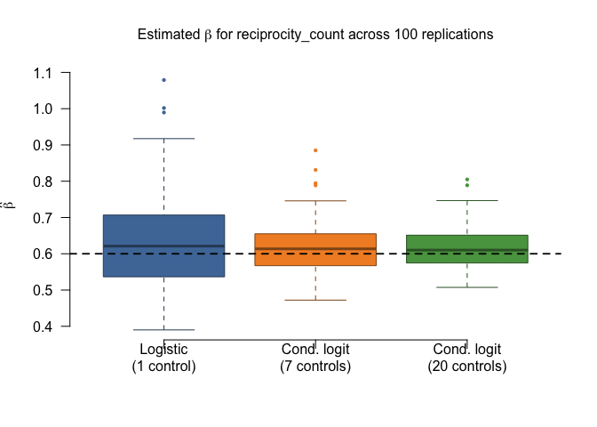

Practical 1: Simulating Relational Events
📥 Download files
- Simulating-REM-Data.R — R script
- Simulating-REM-Data.Rmd — R Markdown source
# remotes::install_github("franciscorichter/amore")
library(amore)
library(knitr)
1.
set.seed(1)
raw_data_m1 <- simulate_relational_events(
n_events = 1000,
senders = paste0("a", 1:20),
receivers = paste0("a", 1:20),
baseline_rate = 1,
n_controls = 1,
endogenous_stats = "reciprocity_count",
endogenous_effects = c(reciprocity_count = 0.6)
)
head(raw_data_m1,20)
## stratum event sender receiver time reciprocity_count
## 1 1 1 a3 a8 0.001987321 0
## 2 1 0 a17 a9 0.001987321 0
## 3 2 1 a20 a18 0.002354409 0
## 4 2 0 a14 a16 0.002354409 0
## 5 3 1 a11 a20 0.003031029 0
## 6 3 0 a17 a10 0.003031029 0
## 7 4 1 a2 a14 0.007734052 0
## 8 4 0 a10 a5 0.007734052 0
## 9 5 1 a14 a5 0.009142085 0
## 10 5 0 a8 a18 0.009142085 0
## 11 6 1 a16 a18 0.010586697 0
## 12 6 0 a3 a5 0.010586697 0
## 13 7 1 a5 a3 0.011374750 0
## 14 7 0 a12 a6 0.011374750 0
## 15 8 1 a20 a11 0.014583015 1
## 16 8 0 a14 a9 0.014583015 0
## 17 9 1 a1 a10 0.017310914 0
## 18 9 0 a14 a5 0.017310914 0
## 19 10 1 a15 a16 0.022153557 0
## 20 10 0 a4 a16 0.022153557 0
2. Construct datasets for two inference procedures
2.1. Case-7-control for inference via conditional logistic regression
set.seed(1)
raw_data_m7 <- simulate_relational_events(
n_events = 1000,
senders = paste0("a", 1:20),
receivers = paste0("a", 1:20),
baseline_rate = 1,
n_controls = 7,
endogenous_stats = "reciprocity_count",
endogenous_effects = c(reciprocity_count = 0.6),
)
head(raw_data_m7,10)
## stratum event sender receiver time reciprocity_count
## 1 1 1 a3 a8 0.001987321 0
## 2 1 0 a17 a9 0.001987321 0
## 3 1 0 a16 a7 0.001987321 0
## 4 1 0 a15 a16 0.001987321 0
## 5 1 0 a5 a15 0.001987321 0
## 6 1 0 a18 a10 0.001987321 0
## 7 1 0 a4 a17 0.001987321 0
## 8 1 0 a10 a5 0.001987321 0
## 9 2 1 a15 a5 0.003404473 0
## 10 2 0 a8 a18 0.003404473 0
2.2. Case-1-control dataset in “wide” format for inference via degenerate logistic regression
wide_data_m1 <- widen_case_control(raw_data_m1, case = "event", stratum= "stratum")
head(wide_data_m1)
## stratum sender_ev sender_nv receiver_ev receiver_nv time_ev time_nv
## 1 1 a3 a17 a8 a9 0.001987321 0.001987321
## 2 10 a15 a4 a16 a16 0.022153557 0.022153557
## 3 100 a3 a2 a15 a1 0.207398477 0.207398477
## 4 1000 a18 a8 a20 a2 0.565565424 0.565565424
## 5 101 a2 a12 a17 a19 0.210725053 0.210725053
## 6 102 a11 a19 a13 a11 0.212042188 0.212042188
## d_time reciprocity_count_ev reciprocity_count_nv d_reciprocity_count
## 1 0 0 0 0
## 2 0 0 0 0
## 3 0 1 0 1
## 4 0 336 2 334
## 5 0 0 0 0
## 6 0 0 1 -1
3. Inference procedures
3.1. Conditional logistic regression
fit_clogit <- rem(event ~ reciprocity_count, data = raw_data_m7, method = "clogit")
summary(fit_clogit)
## Call:
## coxph(formula = Surv(rep(1, 8000L), .case) ~ reciprocity_count +
## strata(.strat), data = cl, method = "exact")
##
## n= 8000, number of events= 1000
##
## coef exp(coef) se(coef) z Pr(>|z|)
## reciprocity_count 0.66848 1.95126 0.08316 8.039 9.07e-16 ***
## ---
## Signif. codes: 0 '***' 0.001 '**' 0.01 '*' 0.05 '.' 0.1 ' ' 1
##
## exp(coef) exp(-coef) lower .95 upper .95
## reciprocity_count 1.951 0.5125 1.658 2.297
##
## Concordance= 0.898 (se = 0.066 )
## Likelihood ratio test= 517.3 on 1 df, p=<2e-16
## Wald test = 64.62 on 1 df, p=9e-16
## Score (logrank) test = 798.1 on 1 df, p=<2e-16
3.2. Degenerate logistic regression
fit_glm <- rem(~ reciprocity_count, data = wide_data_m1, method = "gam")
summary(fit_glm)
##
## Family: binomial
## Link function: logit
##
## Formula:
## one ~ -1 + reciprocity_count
##
## Parametric coefficients:
## Estimate Std. Error z value Pr(>|z|)
## reciprocity_count 0.54154 0.09815 5.518 3.44e-08 ***
## ---
## Signif. codes: 0 '***' 0.001 '**' 0.01 '*' 0.05 '.' 0.1 ' ' 1
##
##
## R-sq.(adj) = -Inf Deviance explained = -Inf%
## UBRE = -0.55893 Scale est. = 1 n = 1000
4. Replicate the simulation study 100 times
# parameters
N_SIM <- 100
N_EVENTS <- 1000
TRUE_BETA <- 0.6
SENDERS <- paste0("a", 1:20)
RECEIVERS <- paste0("a", 1:20)
# storage
coefs <- data.frame(
glm_1 = numeric(N_SIM), # degenerate logistic, 1 control
clogit_7 = numeric(N_SIM), # conditional logit, 7 controls
clogit_20 = numeric(N_SIM) # conditional logit, 20 controls
)
for (i in seq_len(N_SIM)) {
set.seed(i)
# case-1-control dataset
d1 <- simulate_relational_events(
n_events = N_EVENTS,
senders = SENDERS,
receivers = RECEIVERS,
baseline_rate = 1,
n_controls = 1,
endogenous_stats = "reciprocity_count",
endogenous_effects = c(reciprocity_count = TRUE_BETA),
)
# fit degenerate logistic regression
wide_d1 <- widen_case_control(d1, case = "event", stratum = "stratum")
fit_glm <- rem(~ reciprocity_count, data = wide_d1, method = "gam")
coefs$glm_1[i] <- coef(fit_glm)[["reciprocity_count"]]
# case-7-control dataset
d7 <- simulate_relational_events(
n_events = N_EVENTS,
senders = SENDERS,
receivers = RECEIVERS,
baseline_rate = 1,
n_controls = 7,
endogenous_stats = "reciprocity_count",
endogenous_effects = c(reciprocity_count = TRUE_BETA)
)
fit_clogit_7 <- rem(event ~ reciprocity_count, data = d7, method = "clogit")
coefs$clogit_7[i] <- coef(fit_clogit_7)[["reciprocity_count"]]
# case-20-control dataset
d20 <- simulate_relational_events(
n_events = N_EVENTS,
senders = SENDERS,
receivers = RECEIVERS,
baseline_rate = 1,
n_controls = 20,
endogenous_stats = "reciprocity_count",
endogenous_effects = c(reciprocity_count = TRUE_BETA),
)
fit_clogit_20 <- rem(event ~ reciprocity_count, data = d20, method = "clogit")
coefs$clogit_20[i] <- coef(fit_clogit_20)[["reciprocity_count"]]
if (i %% 10 == 0) message(sprintf(" Completed %d / %d replications", i, N_SIM))
}
## Completed 10 / 100 replications
## Completed 20 / 100 replications
## Completed 30 / 100 replications
## Completed 40 / 100 replications
## Completed 50 / 100 replications
## Completed 60 / 100 replications
## Completed 70 / 100 replications
## Completed 80 / 100 replications
## Completed 90 / 100 replications
## Completed 100 / 100 replications
coefs_long <- stack(coefs)
levels(coefs_long$ind) <- c(
"Logistic\n(1 control)",
"Cond. logit\n(7 controls)",
"Cond. logit\n(20 controls)"
)
cols <- c("#4E79A7", "#F28E2B", "#59A14F")
boxplot(
values ~ ind,
data = coefs_long,
col = cols,
border = darken <- adjustcolor(cols, red.f = 0.6, green.f = 0.6, blue.f = 0.6),
outcol = cols,
outpch = 16,
cex = 0.6,
las = 1,
xlab = "",
ylab = expression(hat(beta)),
main = expression(
"Estimated "*beta*" for reciprocity_count across 100 replications"
),
cex.main = 1.0,
cex.lab = 0.95,
frame.plot = FALSE
)
abline(h = TRUE_BETA, lty = 2, lwd = 1.8, col = "black")
